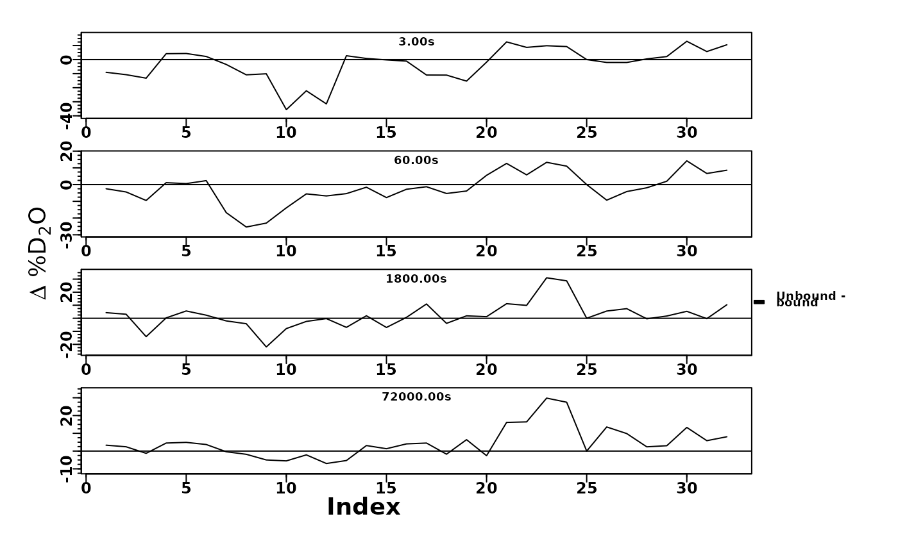

Returns difference in average procent deuteration plot for timepoints in the data frame
Source:R/plot_diff_tp_proc.R
plots_diff_tp_proc.RdReturns plots with difference in procent deuteration for each peptide.
Examples
file_nm<-system.file("extdata", "All_results_table.csv", package = "HDXBoxeR")
a<- output_tp(file_nm, percent=TRUE)
#> Protein.States used: Unbound bound
#> Deut.times used: 3.00s 60.00s 1800.00s 72000.00s
#> 29 peptide row(s) dropped: 29 not measured in every state, 0 with fewer than 2 replicate value(s)
#> Number of replicates used: Unbound=3 bound=3
#> no csv file written
plots_diff_tp_proc(df=a, replicates=3, col=c(1:4))

plots_diff_tp_proc(df=a)